About

I'm an aspiring Application/Web Developer in Kernersville, NC. I have a great passion for UI/UX design, graphics, and creating responsive and interactive apps for all users to enjoy throughout the world!
Skills
Link to my resume here!
Projects
(WIP) Big Fishin World
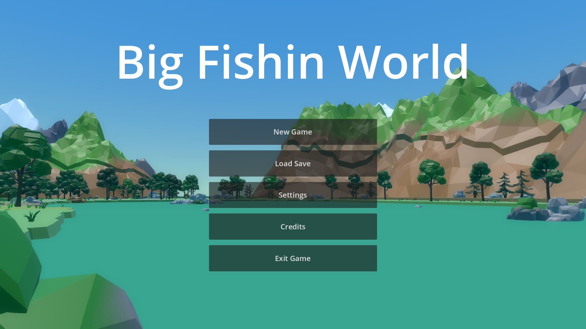Big Fishin World is a self-developed, indie fishing game. It is an open world game that the player will explore the world of Anglin, with various activities to do like treasure hunting, exploring, birdwatching, buying cosmetic items and upgrades, and yes... even fishing! With over 150 fish at initial launch, you'll be in for one reel good time!
Independent Study Protein Scaffold Software Project
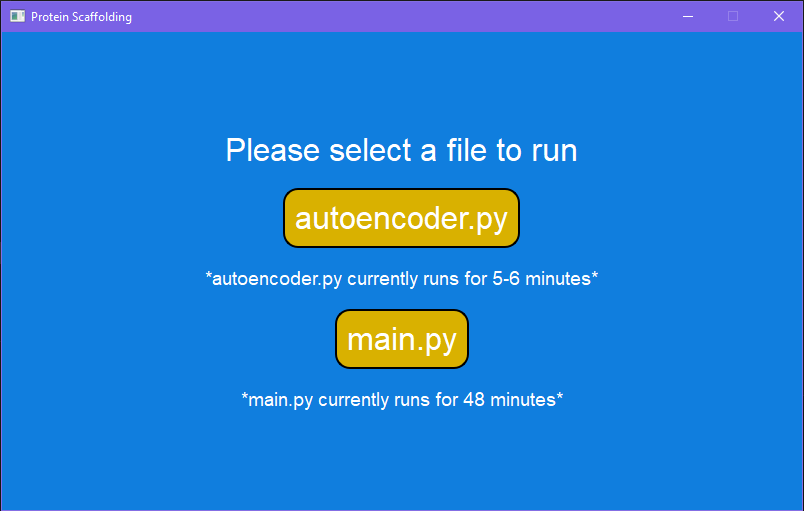For my COMP-790 Independent Study course I was tasked to take two github repos already made by previous students and transform them into an interactive software that would allow the user to choose which protein scaffolding testing environment they wanted to run. This software was comprised entirely of python and utilized many python libraries within a python development environment such as tensorflow to run deep learning algorithms on the protein data being fed into the program.
Recommendation System Deep Learning Research Project
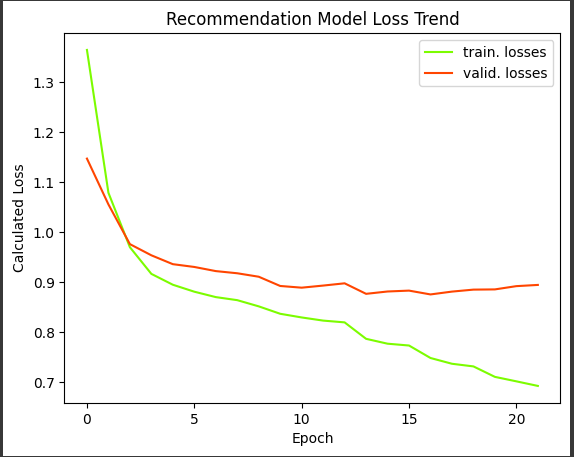For my COMP-851 Big Data Analytics course, our final project was to conduct research on a deep learning topic. For this I made the decision to study YouTube's Recommendation System and conduct a experiment that involved building a test version of a recommendation system to conduct collaborative analysis based on the data that was fed into the program. This was a project entirely consisting of Python as well as the use of Google Colab which is a great tool for setting up easy python environments without having to store anything locally. All the final documents as well as my final iteration of the project can be found here!
NC A&T Course Registration Web App
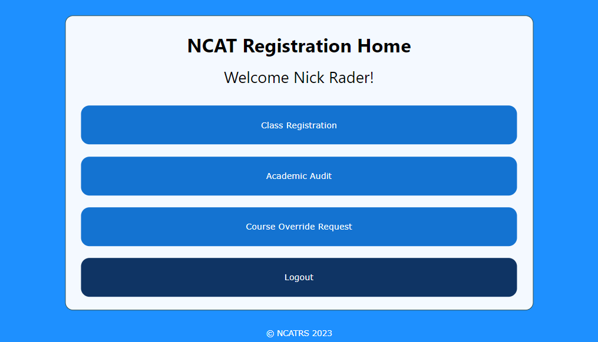I made this interactive Registration System for North Carolina A&T using python libraries including the Flask framework. This software was made for the graduate school project in my COMP-710 software engingeering course. During this project, I worked in a team of 4 to execute the agile software life-cycle model as well as learn the benefits and downsides of other life-cycle models as well as the many challenges of the software engingeering process through this project.
Gobbie Quest Demo
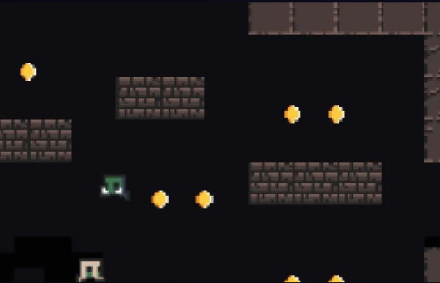I made this interactive game using GameMaker2. This game was made for the final project in my COMP-755 advanced operating systems course where I was tasked with looking furthur into how games run on the OS with multiple calculations running concurrently. During this project, I worked alone to go about developing this game through certain stages (concept stage,implementation stage). Playing this game requires the OperaGX browser, but you can play it by clicking here!
ATC Sim Software
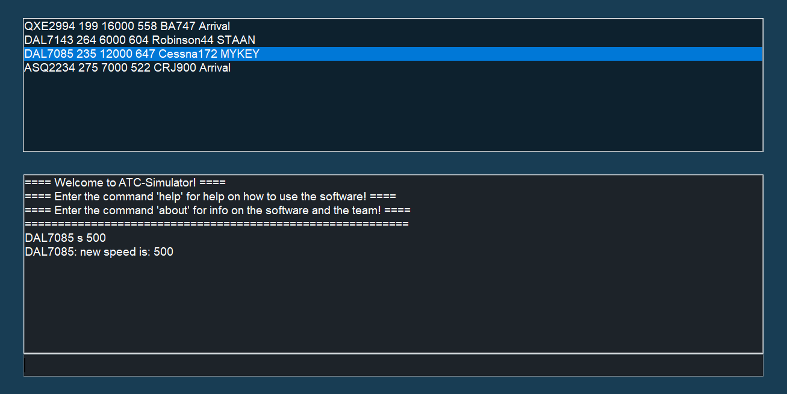I made this interactive Air Traffic Control software using python libraries including the tkinter gui library. This software was made for the capstone project in my CSC-4710 software engingeering course. During this project, I worked in a team of 6 to execute the waterfall software life-cycle model as well as learn the benefits and downsides of other life-cycle models as well as the many challenges of the software engingeering process through this project.
Neuron Interactive Narrative Game
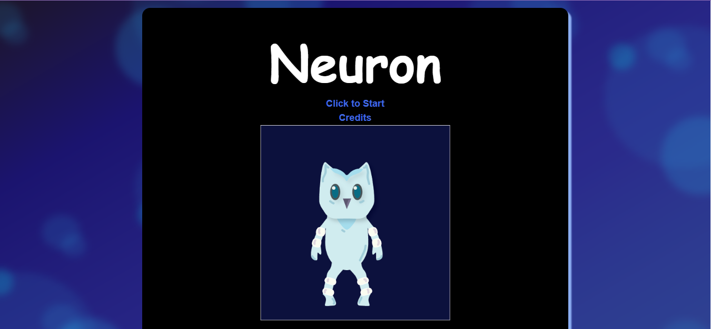I made this Interactive narrative game using the Twine Software. All artwork used are my original works. I based a lot of inspiration for this game from on my own childhood and my diagnoses for ASD. Play now clicking the link here!
Terc Capital Web Portal
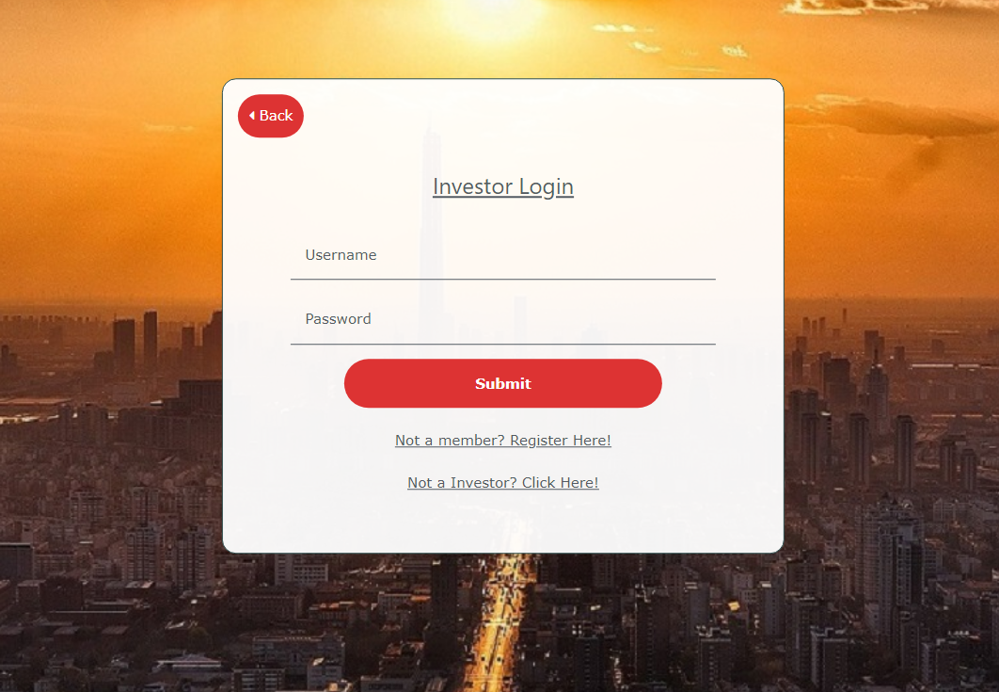Terc Capital is a startup company with the ambition to increase access for everyday people using a variety of financial technology products. I took part in building up the web portal for this startup. The web portal is built in Node.js with an ejs frontend framework.
ESTT Web App
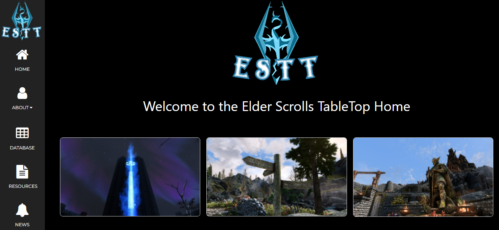I made a Web Site for my ESTT Tabletop Game. This project involves UI development and basic design and inclusion of responsive changes of a webpage using HTML5/CSS, as well as database integration to a website using NODE JS/SQL code for the website's backend.
VCheckbook Web App
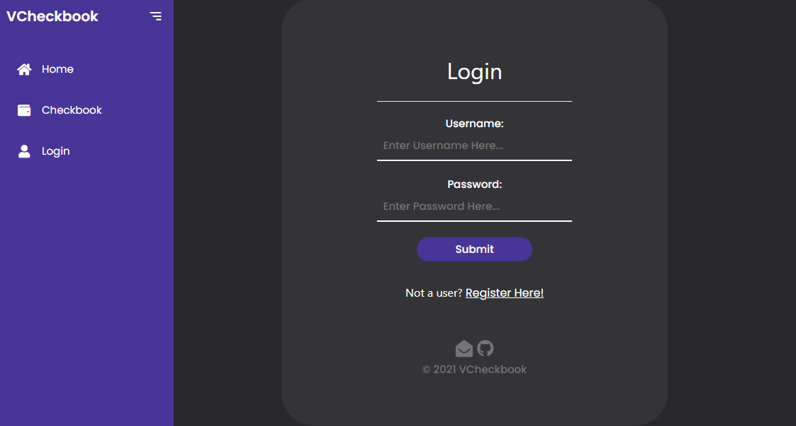I made a web app for my Virtual Checkbook app idea. This project involves UI development and basic design and inclusion of responsive changes of a webpage using HTML5/CSS, as well as database integration to a website using NODE JS/SQL code for the website's backend.
Madlibs App
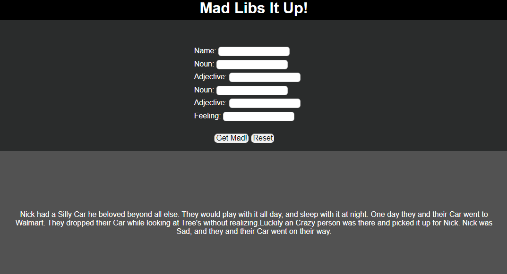I was assigned to work on a Madlibs website with a couple of my peers in my Web Technologies course. There we accomplished making a clean and easy-to-use website where the stories would randomly generate after each time submitting input. This site was created using HTML5/CSS/PHP/Javascript. (NO LONGER ACCESSIBLE!)
Database Design for HPU's School of Education
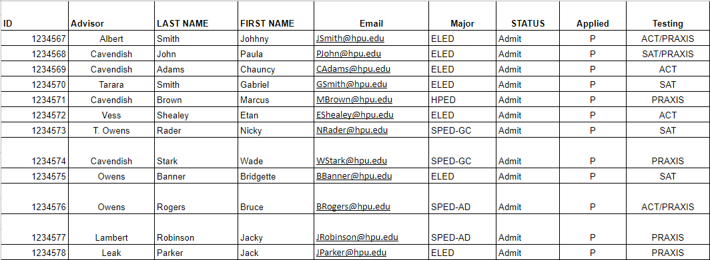My Team and I were assigned to develop a database based on a spreadsheet that kept track of the School of Education’s current students and their progress throughout their major. This project involved Database Management, Design, MYSQL, and management of Databases on PHPMyAdmin.
ESTT TableTop Game System (Spreadsheet)
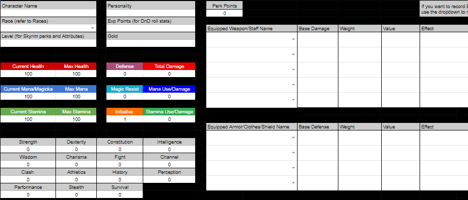I made a full D&D-style tabletop game based on the popular video game Skyrim. This involved major Google Sheets/Spreadsheet Development, Database management, and design. I continue to be in constant management/development for the game ever since I came out with it by play-testing my game with my friends.
Contact
Have a question or have any opportunities?